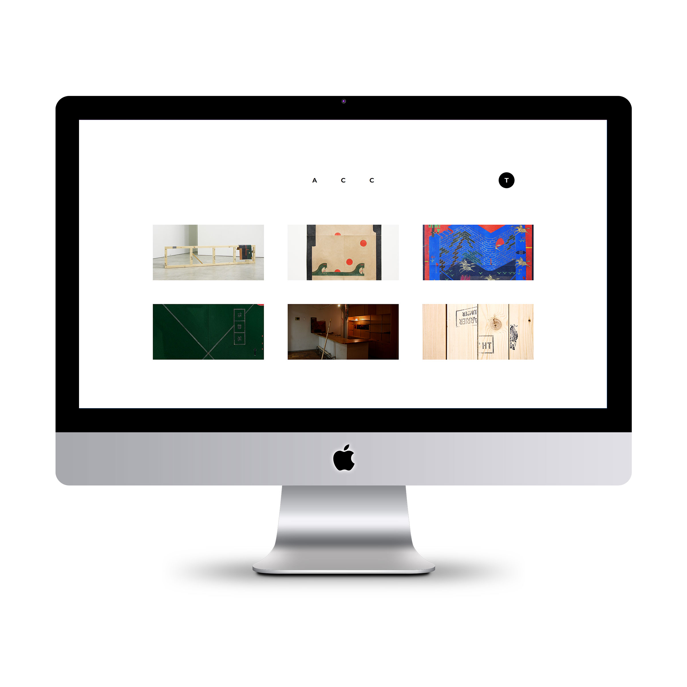

works archive（制作中）
- ・開発環境
- HTML：EJS / CSS：Sass / CSS設計：SMACSS, BEM / JS：jQuery / タスクランナー：gulp
http://toruotani.com
―
概要
自身でこれまで制作してきた美術作品のアーカイブ兼ポートフォリオ。
CSS設計の手法（SMACSS,BEM）について学習中のため、そのアウトプットも兼ねて制作。
基本的な構造は学習した書籍を参考にしつつ、スタイルや開発環境を自分なりにカスタマイズしながら現在制作中。